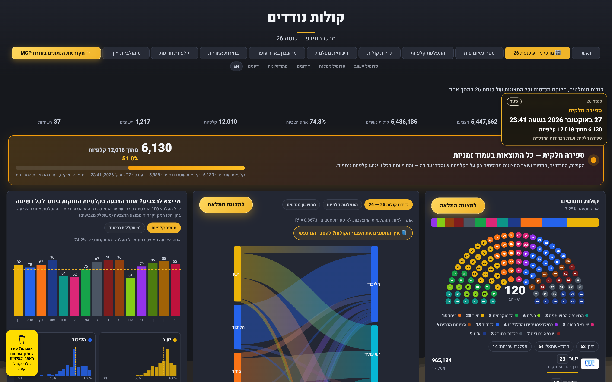
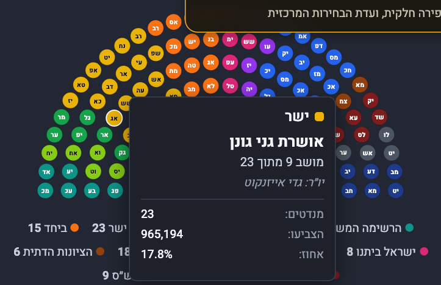
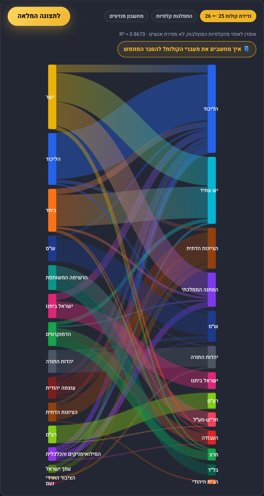
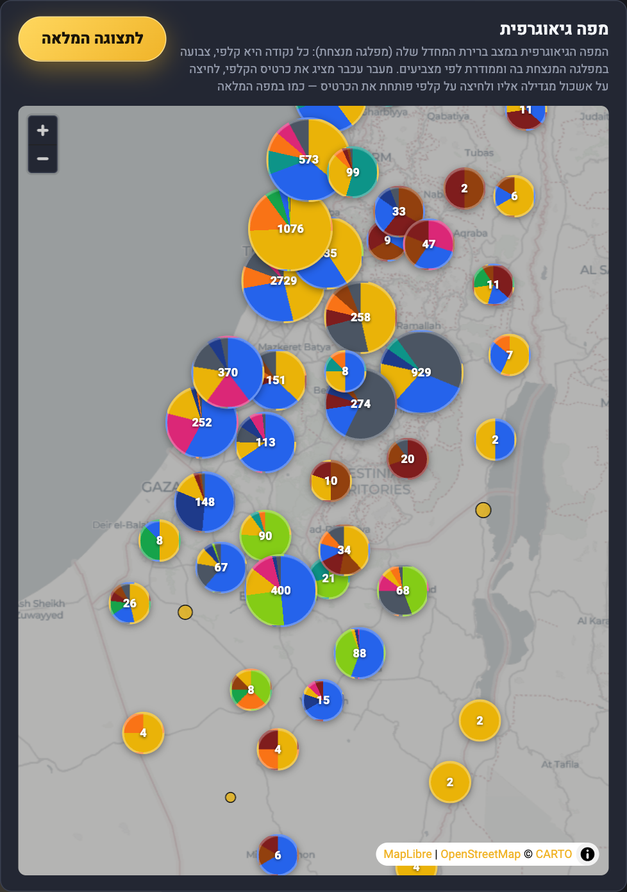
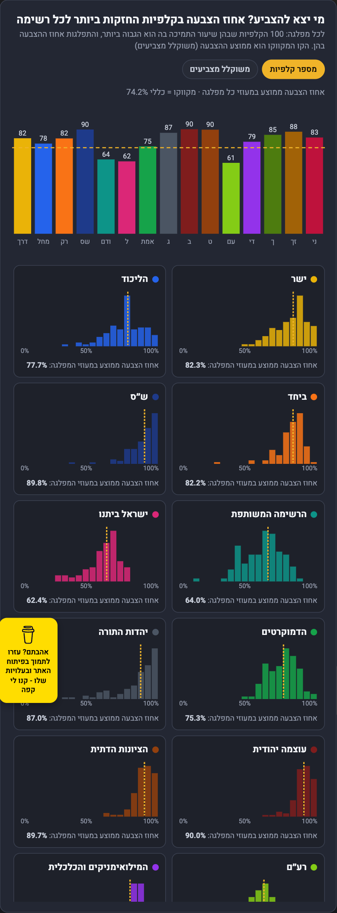
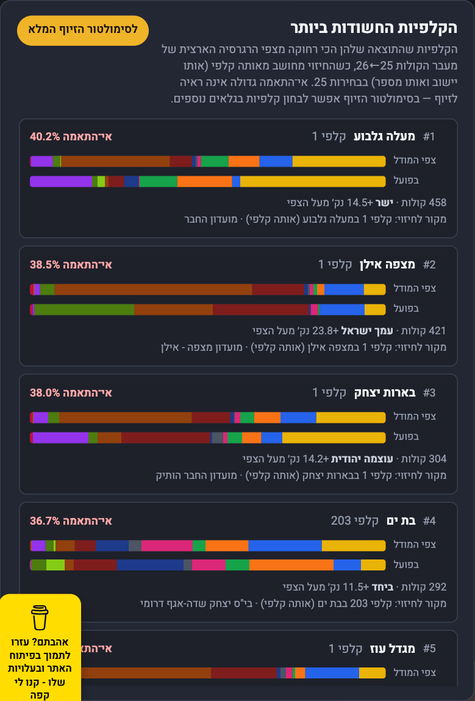

ליל הבחירות · כנסת 26 ·
27.10.2026
22:00
הקלפיות נסגרו.
התוצאות מתחילות לזרום.
12,018 קלפיות. כל אחת מהן תגיע למסך אחד.
מרכז המידע של ליל הבחירות
מנדטים, מועמדים, נדידת קולות, מפה וקלפיות חשודות — במסך אחד, חי.

ספירה חיה
כל קלפי שנספרה —
כאן, תוך דקות
המערכת בודקת תוצאות חדשות כל 10 דקות, ובונה מחדש את כל התצוגות
0 מתוך 12,018 קלפיות
המספרים בצילומים: הדמיית ספירה על נתוני הסימולציה
לא רק מנדטים.
אנשים.
שם המועמד או המועמדת בכל מושב — במעבר עכבר אחד.

לאן עברו הקולות?
מודל נדידת הקולות הארצי בין כנסת 25 לכנסת 26, קלפי־קלפי.

כל קלפי.
כל רחוב.
מי ניצח בשכונה שלכם? מפה חיה של כל תחנות ההצבעה בארץ.

מי יצא להצביע — ומה לא מסתדר?
אחוזי הצבעה במעוזי כל רשימה, והקלפיות שהכי חורגות מצפי המודל.


קולות נודדים
אתר נתוני הבחירות
הגדול בישראל
מרכז המידע לכנסת 26 פתוח כבר עכשיו.
בליל הבחירות — הוא מתעדכן לבד.
kolot-nodedim.netlify.app/k26.html
27.10 · מ־22:00 · חינם, בלי הרשמה